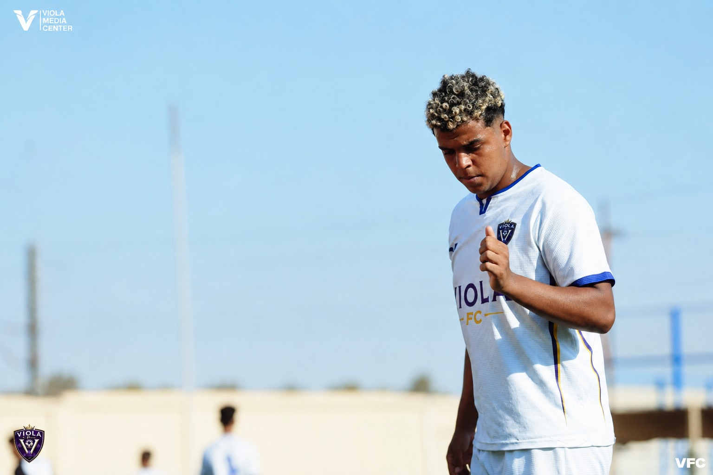
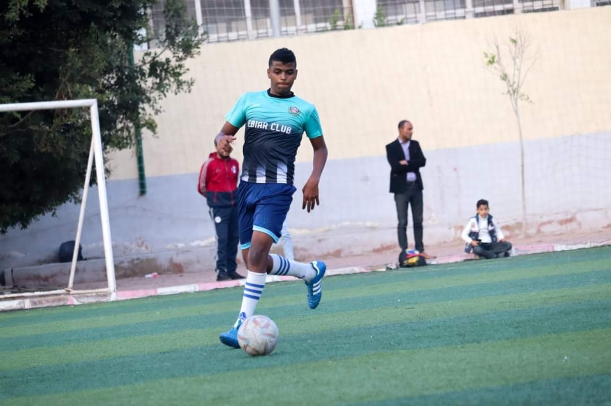
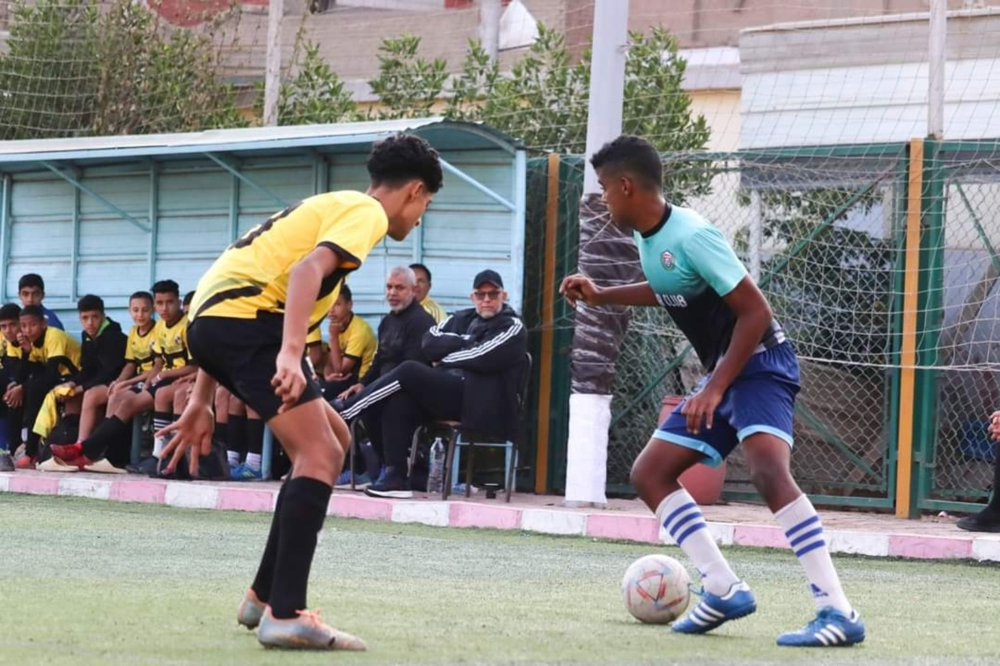

هدّاف دوري منطقة الغربية
صبحيأحمدالنجار
مهاجم أيمن القدم يجمع بين السرعة والقوة والمهارة والحسم والقدرة على التسجيل واللعب الهوائي.

05مهاجم • Viola FC
PLAYER
PROFILE
PROFILE
01 / البطاقة الاحترافيةبطاقة لاعب
بطاقة لاعب
بطابع FIFA
ملخص بصري سريع لأهم بيانات اللاعب، بتصميم مستوحى من بطاقات اللاعبين الحديثة.
VIOLA FC052009

صبحي أحمد النجار
مهاجم • قدم يمنى
33هدف
23مباراة
9تمريرة حاسمة
42مساهمة تهديفية
1.43معدل
2009مواليد
05رقم القميص
STالمركز الأساسي
Rالقدم المفضلة
2009سنة الميلاد
بطاقة تفاعلية تتحرك مع الماوس واللمس، مع إضاءة وانعكاس ديناميكي.

02 / PROFILE
02 / الملف الشخصيمهاجم يبحث عن
مهاجم يبحث عن
المساحة والحسم.
صبحي أحمد النجار، مواليد 2009 من قسطا، لاعب في مركز المهاجم، يعتمد على السرعة والقوة والمهارة والتحرك الهجومي والكرات الرأسية، مع قدم يمنى ورقم قميص 05.
الاسم الكاملصبحي أحمد النجار
سنة الميلاد2009
المكانقسطا
المركزمهاجم
الطول180 سم
الوزن78 كجم
القدماليمنى
رقم القميص05
اكتشاف المدربالكابتن حسام نعينع
03 / أرقام الملعبالأرقام
الأرقام
تتكلم.
الإنتاج التهديفي33 هدف + 9 تمريرات حاسمة = 42 مساهمةمعدل التسجيل = 33 ÷ 23 = 1.43 هدف لكل مباراة
1.43
04 / أدوات الهجومأدوات
أدوات
المهاجم.
نسب عرضية لتصوير نقاط القوة المذكورة في الملف، وليست تقييمات رسمية من جهة فنية.
الحسم والتسجيل0%
السرعة0%
المهارة0%
القوة البدنية0%
الكرات الرأسية0%
الحِدة الهجومية0%
05 / محطات اللعبرحلة
رحلة
اللاعب.
01
المحطة الأولى
منتخب أبيار
بداية محطة اللعب المذكورة في مسيرة اللاعب، ومنها ظهر اسمه ضمن جيل مواليد 2009.
02
المحطة الثانية
الأهلي
فترة قصيرة ضمن مسيرة اللاعب في مرحلة مبكرة من التطور.
03
المحطة الحالية
Viola FC
المحطة الحالية — مهاجم، قدم يمنى، رقم القميص 05.
06 / الإنجازاتإنجازات
إنجازات
تتكلم بالأرقام.
محطات بارزة في مسيرة صبحي، مع عرض بصري متحرك لكل إنجاز.
01
إنجاز تهديفي
هدّاف دوري منطقة الغربية
23هدفًافي10مباريات
معدل تهديفي 2.30 هدف / مباراة في هذه المسابقة، مع 9 تمريرات حاسمة بإجمالي 42 مساهمة تهديفية.
02
تكريم فردي
أفضل لاعب في منتخب أبيار لمواليد 2009
اختيار فردي ضمن منتخب أبيار لفئة مواليد 2009.
03
تميّز لفئة 2009
أفضل لاعب مواليد 2009 في أبيار
إنجاز فردي ضمن لاعبي مواليد 2009 في أبيار.
07 / مكانه في الملعباقرأ
اقرأ
تحركه.
05
STالمركز الأساسيمهاجمتحرك خلف الخط • دخول العمق • استغلال المساحة
دخول المساحة
التحرك من أمام المدافعين نحو الفراغات بين الخطوط.
الحسم داخل الصندوق
تركيز أساسي على الوصول لمناطق التسجيل وإنهاء الهجمة.
الكرات الهوائية
القدرة على التعامل مع العرضيات والكرات الرأسية ضمن أدواته.
08 / معرض الصوراللعبة
اللعبة
في لحظاتها.
09 / اتصال مباشرخلينا
خلينا
نتكلم كورة.
للاستفسارات الخاصة بالأندية، التجارب، الفرص والتواصل الرياضي.
اتصال مباشر+20 10 3607 3865للتجارب والتواصل الرياضي
↗واتساب اللاعبابدأ محادثةرسالة مباشرة وسريعة
↗TikTok@crest172009تابع آخر اللقطات
↗ الاتصال يفتح تطبيق الهاتف مباشرة.
واتساب متاح للرسائل والاستفسارات.